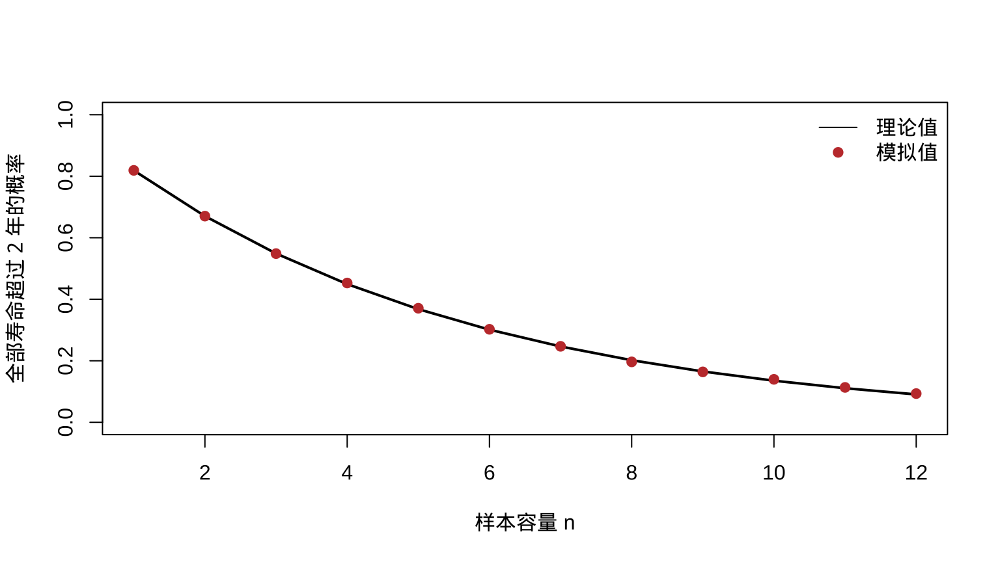
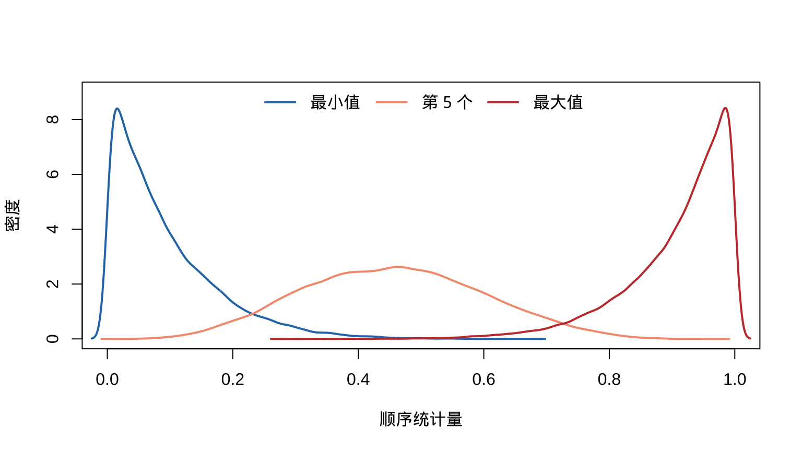
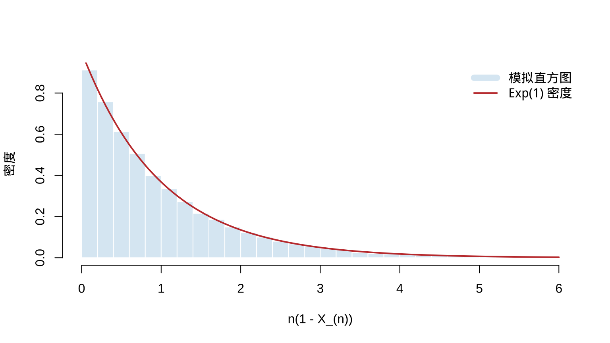

第 5 随机样本及其性质
本章对应原课件 chap-5.tex、四个 LaTeX 子文件及补充稿 chapter-5.md，讨论随机抽样、抽样分布、顺序统计量、随机变量收敛、中心极限定理、Slutsky 定理和 Delta 方法。补充稿末尾的截断处已按 iid 计算补全；原稿订正见 migration_notes.md。
5.1 随机样本模型
定义 5.1 若 \(X_1,\ldots,X_n\) 相互独立，且每个 \(X_i\) 都具有同一个 pmf 或 pdf \(f(x)\)，则称它们为来自总体 \(f\)、容量为 \(n\) 的随机样本，也称独立同分布（iid）。
独立性给出联合分布
\[f(x_1,\ldots,x_n)=\prod_{i=1}^nf(x_i).\]
若总体属于参数族 \(f(x\mid\theta)\)，则同一个未知参数出现在每个因子中：
\[f(x_1,\ldots,x_n\mid\theta)=\prod_{i=1}^nf(x_i\mid\theta).\]
随机样本模型也称“从无限总体抽样”。对有限总体，有放回抽样满足 iid 条件；无放回抽样的各次取值不独立，但当总体容量 \(N\) 远大于样本容量 \(n\) 时，iid 模型常可作为近似。
例 5.1.3（有限总体近似） 从有限总体 \(\{1,\ldots,1000\}\) 中无放回抽取 10 个数。求 10 个数都大于 200 的概率，并比较 iid 近似与精确概率。
查看详细解答
若暂把 10 次抽取看作独立，则单次抽到大于 200 的数的概率为 \(800/1000\)，因而
\[ P_{\mathrm{iid}}=\left(\frac{800}{1000}\right)^{10}=0.107374. \]
精确计算时，令 \(Y\) 表示样本中大于 200 的数的个数，则 \(Y\sim\operatorname{Hypergeometric}(N=1000,M=800,K=10)\)，所以
\[ P(Y=10)=\frac{\binom{800}{10}\binom{200}{0}}{\binom{1000}{10}} =0.106164. \]
两者相差约 \(0.00121\)。这里 \(n/N=0.01\) 很小，说明 iid 近似是合理的，但它并非精确的无放回抽样模型。
5.2 指数总体的电路板寿命例题
例 5.1 例 5.1.2（指数总体的样本密度）
设 \(X_1,\ldots,X_n\) 来自以 \(\beta>0\) 为尺度参数的指数总体。把 \(X_i\) 视为第 \(i\) 块同型电路板的寿命，则
\[ f(\mathbf x\mid\beta)=\prod_{i=1}^n\frac1\beta e^{-x_i/\beta} =\frac1{\beta^n}\exp\left(-\frac{\sum_i x_i}{\beta}\right),\qquad x_i>0. \]
求所有电路板寿命都超过 2 年的概率。
查看详细解答
先按联合密度直接积分：
\[ \begin{aligned} P(X_1>2,\ldots,X_n>2) &=\int_2^\infty\cdots\int_2^\infty\prod_{i=1}^n\frac1\beta e^{-x_i/\beta}\,d\mathbf x\\ &=(e^{-2/\beta})^n=e^{-2n/\beta}. \end{aligned} \]
也可直接利用 iid 性质： \(P(\cap_i\{X_i>2\})=\prod_iP(X_i>2)=e^{-2n/\beta}\)。当平均寿命 \(\beta\) 相对于 \(n\) 较大时，该概率接近 1。
set.seed(5201)
beta <- 10
n_grid <- 1:12
theory <- exp(-2 * n_grid / beta)
simulation <- vapply(n_grid, function(n) {
x <- matrix(rexp(30000 * n, rate = 1 / beta), ncol = n)
mean(apply(x, 1, min) > 2)
}, numeric(1))
plot(n_grid, theory, type = "l", lwd = 2, ylim = c(0, 1),
xlab = "样本容量 n", ylab = "全部寿命超过 2 年的概率")
points(n_grid, simulation, pch = 19, col = "#C43C39")
legend("topright", c("理论值", "模拟值"), lty = c(1, NA), pch = c(NA, 19),
col = c("black", "#C43C39"), bty = "n")
图 5.1: 全部电路板寿命超过 2 年的理论概率与模拟概率
5.3 统计量、样本均值与样本方差
定义 5.2 设 \(X_1,\ldots,X_n\) 为随机样本，\(T\) 是定义在样本空间上的实值或向量值函数，则 \(Y=T(X_1,\ldots,X_n)\) 称为统计量，\(Y\) 的概率分布称为它的抽样分布。
\[ \bar X=\frac1n\sum_{i=1}^nX_i,\qquad S^2=\frac1{n-1}\sum_{i=1}^n(X_i-\bar X)^2,\qquad S=\sqrt{S^2}. \]
定理 5.2.4（离差平方和恒等式） 对任意实数 \(x_1,\ldots,x_n\)，记 \(\bar x=n^{-1}\sum_i x_i\)，则
\[ \sum_{i=1}^n(x_i-a)^2 =\sum_{i=1}^n(x_i-\bar x)^2+n(\bar x-a)^2, \]
因而离差平方和在 \(a=\bar x\) 时达到最小值，并且
\[ (n-1)s^2=\sum_{i=1}^n(x_i-\bar x)^2 =\sum_{i=1}^nx_i^2-n\bar x^2. \]
展开证明
在每一项中加减 \(\bar x\)：
\[ \begin{aligned} \sum_{i=1}^n(x_i-a)^2 &=\sum_{i=1}^n\{(x_i-\bar x)+(\bar x-a)\}^2\\ &=\sum_{i=1}^n(x_i-\bar x)^2 +2(\bar x-a)\sum_{i=1}^n(x_i-\bar x) +n(\bar x-a)^2. \end{aligned} \]
由于 \(\sum_i(x_i-\bar x)=0\)，交叉项消失，第一式成立；右端只有最后一项依赖 \(a\)，故在 \(a=\bar x\) 时最小。再令 \(a=0\)，并整理 \(\sum_i(x_i-\bar x)^2=\sum_i x_i^2-n\bar x^2\)，即得第二式。
引理 5.2.5（iid 和的均值与方差） 若 \(E\{g(X_1)\}\) 与 \(\operatorname{Var}\{g(X_1)\}\) 存在，则
\[ E\left\{\sum_{i=1}^ng(X_i)\right\}=nE\{g(X_1)\},\qquad \operatorname{Var}\left\{\sum_{i=1}^ng(X_i)\right\} =n\operatorname{Var}\{g(X_1)\}. \]
展开证明
期望的结论只用到同分布与期望的线性性：
\[ E\left\{\sum_i g(X_i)\right\}=\sum_iE\{g(X_i)\} =nE\{g(X_1)\}. \]
方差还需独立性。展开中心化和的平方后，\(n\) 个平方项各给出 \(\operatorname{Var}\{g(X_1)\}\)；对 \(i\ne j\)，交叉项的期望为
\[ E([g(X_i)-Eg(X_i)][g(X_j)-Eg(X_j)])=0, \]
所以总方差为 \(n\operatorname{Var}\{g(X_1)\}\)。
定理 5.1 定理 5.2.6（样本均值与样本方差） 若 \(X_1,\ldots,X_n\) iid， \(E(X_i)=\mu\) 且 \(\operatorname{Var}(X_i)=\sigma^2<\infty\)，则
\[E(\bar X)=\mu,\quad \operatorname{Var}(\bar X)=\sigma^2/n, \quad E(S^2)=\sigma^2.\]
展开证明
由引理 5.2.5，
\[ E(\bar X)=\frac1n\sum_iE(X_i)=\mu, \qquad \operatorname{Var}(\bar X)=\frac1{n^2}\sum_i\operatorname{Var}(X_i) =\frac{\sigma^2}{n}. \]
再由定理 5.2.4，
\[ (n-1)S^2=\sum_iX_i^2-n\bar X^2. \]
注意 \(E(X_i^2)=\sigma^2+\mu^2\)，以及 \(E(\bar X^2)=\operatorname{Var}(\bar X)+[E(\bar X)]^2 =\sigma^2/n+\mu^2\)，于是
\[ \begin{aligned} (n-1)E(S^2) &=n(\sigma^2+\mu^2) -n\left(\frac{\sigma^2}{n}+\mu^2\right)\\ &=(n-1)\sigma^2. \end{aligned} \]
两边除以 \(n-1\) 即得 \(E(S^2)=\sigma^2\)。这也解释了样本方差分母采用 \(n-1\)：它使 \(S^2\) 对总体方差无偏。
若再假定总体正态，则样本均值不仅具有上述均值和方差，而且 \(\bar X\sim N(\mu,\sigma^2/n)\)；这一结论可由下一节的 MGF 直接识别。
5.4 样本均值的矩母函数与正态例题
定理 5.2 定理 5.2.7（样本均值的 MGF）
若总体矩母函数为 \(M_X(t)\)，则 \(M_{\bar X}(t)=[M_X(t/n)]^n\)。
Proof.
展开证明
由独立性，
\[ M_{\bar X}(t)=E\prod_{i=1}^ne^{tX_i/n} =\prod_{i=1}^nE(e^{tX_i/n})=[M_X(t/n)]^n. \]
例 5.2.8（正态样本均值） 若总体为 \(N(\mu,\sigma^2)\)，求 \(\bar X\) 的分布。
查看详细解答
若总体为 \(N(\mu,\sigma^2)\)，则
\[ M_{\bar X}(t)=\left[\exp\left(\mu\frac tn+\frac{\sigma^2(t/n)^2}{2}\right)\right]^n =\exp\left(\mu t+\frac{(\sigma^2/n)t^2}{2}\right), \]
故 \(\bar X\sim N(\mu,\sigma^2/n)\)。
同一方法也说明：若 \(X_i\overset{\mathrm{iid}}\sim \operatorname{Gamma}(\alpha,\beta)\)（形状—尺度参数化），则 \(\sum_iX_i\sim\operatorname{Gamma}(n\alpha,\beta)\)，从而 \(\bar X\sim\operatorname{Gamma}(n\alpha,\beta/n)\)。
5.5 卷积公式
定理 5.3 定理 5.2.9（卷积公式）
若连续随机变量 \(X,Y\) 相互独立，则 \(Z=X+Y\) 的密度为
\[f_Z(z)=\int_{-\infty}^{\infty}f_X(x)f_Y(z-x)\,dx.\]
Proof.
展开证明
令 \(Z=X+Y,W=X\)。反变换为 \(X=W,Y=Z-W\)，Jacobian 绝对值为 1，故 \(f_{Z,W}(z,w)=f_X(w)f_Y(z-w)\)；对 \(w\) 积分即得结论。
例 5.2.10（Cauchy 变量之和） 若 \(U\sim\operatorname{Cauchy}(0,\sigma)\)、 \(V\sim\operatorname{Cauchy}(0,\tau)\) 且相互独立，则 \(U+V\sim\operatorname{Cauchy}(0,\sigma+\tau)\)。因此 iid 标准 Cauchy 样本的均值 \(\bar X\) 仍服从标准 Cauchy 分布。
查看推导过程
卷积公式给出
\[ f_{U+V}(z)=\int_{-\infty}^{\infty} \frac{\sigma}{\pi(\sigma^2+u^2)} \frac{\tau}{\pi\{\tau^2+(z-u)^2\}}\,du. \]
教材把该积分的部分分式分解与反导计算留作练习 5.7；其计算结果为
\[ f_{U+V}(z)=\frac{\sigma+\tau} {\pi\{(\sigma+\tau)^2+z^2\}}, \]
即尺度参数相加。反复应用该结论，\(\sum_{i=1}^nX_i\sim \operatorname{Cauchy}(0,n)\)；再除以 \(n\)，得到 \(\bar X\sim\operatorname{Cauchy}(0,1)\)。这说明在总体方差不存在时，样本均值的离散程度未必随 \(n\) 增大而缩小。
5.6 正态总体的抽样性质
定理 5.3.1（正态样本均值与方差） 若 \(X_1,\ldots,X_n\overset{\mathrm{iid}}\sim N(\mu,\sigma^2)\)，则
- \(\bar X\) 与 \(S^2\) 相互独立；
- \(\bar X\sim N(\mu,\sigma^2/n)\)；
- \((n-1)S^2/\sigma^2\sim\chi^2_{n-1}\)。
展开证明
先标准化 \(Z_i=(X_i-\mu)/\sigma\)，因此只需证明 \(\mu=0\)、 \(\sigma=1\) 的情形；第 2 点已由例 5.2.8 得到。
对独立性，令 \(Y_1=\bar X\)、\(Y_i=X_i-\bar X\)（\(i=2,\ldots,n\)）。 \(S^2\) 只依赖 \((Y_2,\ldots,Y_n)\)，而正态样本联合密度在这一线性变换后可分解为只含 \(Y_1\) 的因子与只含 \((Y_2,\ldots,Y_n)\) 的因子。故 \(Y_1=\bar X\) 与残差向量独立，从而与 \(S^2\) 独立。
下面按教材的递推证明卡方结论。记 \(\bar X_k,S_k^2\) 为前 \(k\) 个观测的均值和方差，则平方和分解给出
\[ kS_{k+1}^2=(k-1)S_k^2+ \frac{k}{k+1}(X_{k+1}-\bar X_k)^2. \]
当 \(k=1\) 时， \(S_2^2=(X_2-X_1)^2/2\sim\chi_1^2\)。假设 \((k-1)S_k^2\sim\chi_{k-1}^2\)。因为 \(X_{k+1}-\bar X_k\sim N(0,(k+1)/k)\)，所以
\[ \frac{k}{k+1}(X_{k+1}-\bar X_k)^2\sim\chi_1^2. \]
该变量与 \(S_k^2\) 独立，故两个独立卡方变量相加后自由度相加，得到 \(kS_{k+1}^2\sim\chi_k^2\)。归纳完成标准正态情形；恢复尺度后即为 \((n-1)S^2/\sigma^2\sim\chi_{n-1}^2\)。
5.7 Student t 与 Snedecor F 抽样分布
定义 5.3 定义 5.3.4（Student \(t\) 分布）
若 \(X_i\overset{\mathrm{iid}}\sim N(\mu,\sigma^2)\)，则
\[T=\frac{\bar X-\mu}{S/\sqrt n}\sim t_{n-1}.\]
一般的 \(t_p\) 密度为
\[f_T(t)=\frac{\Gamma((p+1)/2)}{\Gamma(p/2)\sqrt{p\pi}} \left(1+\frac{t^2}{p}\right)^{-(p+1)/2},\quad t\in\mathbb R.\]
定义 5.4 定义 5.3.6（Snedecor \(F\) 分布）
若两个正态随机样本相互独立，则
\[F=\frac{S_X^2/\sigma_X^2}{S_Y^2/\sigma_Y^2}\sim F_{n-1,m-1}.\]
一般的 \(F_{p,q}\) 密度为
\[ f_F(x)=\frac{\Gamma((p+q)/2)}{\Gamma(p/2)\Gamma(q/2)} \left(\frac pq\right)^{p/2}\frac{x^{p/2-1}}{[1+(p/q)x]^{(p+q)/2}},\quad x>0. \]
5.8 离散型顺序统计量
定义 5.5 定义 5.4.1（顺序统计量）
将样本从小到大排列所得的 \(X_{(1)}\le\cdots\le X_{(n)}\) 称为顺序统计量；特别地，\(X_{(1)}=\min_iX_i\)，\(X_{(n)}=\max_iX_i\)。
定理 5.4.3（离散型顺序统计量）
设离散总体的可能值为 \(x_1<x_2<\cdots\)，\(P(X=x_i)=p_i\)，记 \(P_i=\sum_{r=1}^ip_r\)、\(P_0=0\)。则
\[P(X_{(j)}\le x_i)=\sum_{k=j}^n\binom nkP_i^k(1-P_i)^{n-k},\]
\[ P(X_{(j)}=x_i)=\sum_{k=j}^n\binom nk \{P_i^k(1-P_i)^{n-k}-P_{i-1}^k(1-P_{i-1})^{n-k}\}. \]
展开证明
令 \(Y=\sum_{r=1}^nI(X_r\le x_i)\)，则 \(Y\sim\operatorname{Bin}(n,P_i)\)，且 \(\{X_{(j)}\le x_i\}\iff\{Y\ge j\}\)。因此
\[ P(X_{(j)}\le x_i)=P(Y\ge j) =\sum_{k=j}^n\binom nkP_i^k(1-P_i)^{n-k}. \]
又因为总体取值按 \(x_1<x_2<\cdots\) 排列，
\[ \begin{aligned} P(X_{(j)}=x_i) &=P(X_{(j)}\le x_i)-P(X_{(j)}<x_i)\\ &=P(X_{(j)}\le x_i)-P(X_{(j)}\le x_{i-1}), \end{aligned} \]
把第一式分别用于 \(P_i\) 与 \(P_{i-1}\) 即得结论。
5.9 连续型顺序统计量
定理 5.4 定理 5.4.4（连续型顺序统计量）
若总体 cdf、pdf 分别为 \(F_X,f_X\)，则
\[ f_{X_{(j)}}(x)=\frac{n!}{(j-1)!(n-j)!}f_X(x)[F_X(x)]^{j-1}[1-F_X(x)]^{n-j}. \]
展开证明
对很小的 \(dx>0\)，事件 \(x<X_{(j)}\le x+dx\) 要求：恰有 \(j-1\) 个样本值不超过 \(x\)，一个样本值落入 \((x,x+dx]\)，其余 \(n-j\) 个大于 \(x+dx\)。选择这三组观测的方式数为 \(n!/\{(j-1)!1!(n-j)!\}\)，所以
\[ \begin{aligned} P(x<X_{(j)}\le x+dx) &=\frac{n!}{(j-1)!(n-j)!}[F_X(x)]^{j-1}\\ &\quad\times\{F_X(x+dx)-F_X(x)\} [1-F_X(x+dx)]^{n-j}. \end{aligned} \]
两边除以 \(dx\) 并令 \(dx\downarrow0\)，利用 \(\{F_X(x+dx)-F_X(x)\}/dx\to f_X(x)\)，即得密度公式。
例 5.4.5（均匀总体的顺序统计量） 若 \(X_i\overset{\mathrm{iid}}\sim U(0,1)\)，求 \(X_{(j)}\) 的密度并识别其分布。
查看详细解答
在 \(0<x<1\) 上，\(F_X(x)=x\)、\(f_X(x)=1\)。代入定理 5.4.4，
\[ f_{X_{(j)}}(x)=\frac{n!}{(j-1)!(n-j)!} x^{j-1}(1-x)^{n-j}. \]
而 \(B(j,n-j+1)=(j-1)!(n-j)!/n!\)，故
\[X_{(j)}\sim\operatorname{Beta}(j,n-j+1).\]
于是 \(E(X_{(j)})=j/(n+1)\)。这也解释了后图中最小值、第 5 个顺序统计量与最大值密度峰值所处的位置。
对 \(1\le i<j\le n\)，
\[ \begin{aligned} f_{X_{(i)},X_{(j)}}(u,v) &=\frac{n!f_X(u)f_X(v)}{(i-1)!(j-i-1)!(n-j)!}[F_X(u)]^{i-1}\\ &\quad\times[F_X(v)-F_X(u)]^{j-i-1}[1-F_X(v)]^{n-j},\quad u<v. \end{aligned} \]
全部顺序统计量的联合密度为
\[ f_{X_{(1)},\ldots,X_{(n)}}(\mathbf x)= \begin{cases}n!\prod_{i=1}^nf_X(x_i),&x_1<\cdots<x_n,\\0,&\text{其他}. \end{cases} \]
这些联合密度的系数来自把样本分配到 \((-\infty,u)\)、\(du\)、\((u,v)\)、\(dv\) 与 \((v,\infty)\) 五类区域的多项式计数；全部顺序统计量的联合密度则对应 \(n!\) 种原始标签排列。
set.seed(5202)
n <- 10
ord <- t(apply(matrix(runif(40000 * n), ncol = n), 1, sort))
cols <- c("#2878B5", "#F39B7F", "#C43C39")
plot(NA, xlim = c(0, 1), ylim = c(0, 9), xlab = "顺序统计量", ylab = "密度")
for (k in seq_along(c(1, 5, 10))) lines(density(ord[, c(1, 5, 10)[k]]), lwd = 2, col = cols[k])
legend("top", c("最小值", "第 5 个", "最大值"), lwd = 2, col = cols, bty = "n", horiz = TRUE)
图 5.2: 均匀总体中不同顺序统计量的抽样分布
5.10 依概率收敛与弱大数定律
定义 5.6 若对每个 \(\varepsilon>0\)，\(P(|X_n-X|\ge\varepsilon)\to0\)，则称 \(X_n\) 依概率收敛于 \(X\)，记为 \(X_n\overset p\to X\)。
定理 5.5 定理 5.5.2（弱大数定律）
若 \(X_i\) iid，\(E(X_i)=\mu\) 且 \(\operatorname{Var}(X_i)=\sigma^2<\infty\)，则弱大数定律给出
\[\bar X_n=\frac1n\sum_{i=1}^nX_i\overset p\longrightarrow\mu.\]
展开证明
由定理 5.2.6，\(E(\bar X_n)=\mu\)、 \(\operatorname{Var}(\bar X_n)=\sigma^2/n\)。对任意 \(\varepsilon>0\)，Chebyshev 不等式给出
\[ P(|\bar X_n-\mu|\ge\varepsilon) \le\frac{\operatorname{Var}(\bar X_n)}{\varepsilon^2} =\frac{\sigma^2}{n\varepsilon^2}\longrightarrow0. \]
这正是 \(\bar X_n\overset p\to\mu\) 的定义。
定理 5.5.4（连续映射） 若 \(X_n\overset p\to X\) 且 \(h\) 连续，则 \(h(X_n)\overset p\to h(X)\)。
例 5.5.3–5.5.5（样本方差与标准差的相合性） 由 \(E(S_n^2)=\sigma^2\)，Chebyshev 不等式给出
\[P(|S_n^2-\sigma^2|\ge\varepsilon)\le\operatorname{Var}(S_n^2)/\varepsilon^2.\]
故 \(\operatorname{Var}(S_n^2)\to0\) 是 \(S_n^2\overset p\to\sigma^2\) 的充分条件；连续映射定理再给出 \(S_n\overset p\to\sigma\)。
查看推导过程
若 \(\operatorname{Var}(S_n^2)\to0\)，则对每个 \(\varepsilon>0\)，上式右端趋于 0，故 \(S_n^2\overset p\to\sigma^2\)。因为平方根函数在 \([0,\infty)\) 上连续，
\[ S_n=\sqrt{S_n^2}\overset p\longrightarrow\sqrt{\sigma^2}=\sigma. \]
教材在此只给出“\(\operatorname{Var}(S_n^2)\to0\) 是充分条件”，并没有在仅假设二阶矩有限时证明该条件；因此这里不把它误写成无附加条件的结论。
5.11 几乎处处收敛与强大数定律
定义 5.7 若 \(P(\lim_{n\to\infty}X_n=X)=1\)，则称 \(X_n\) 几乎处处收敛于 \(X\)，记为 \(X_n\overset{a.s.}\to X\)。即除一个概率为 0 的样本点集合外，\(X_n(s)\to X(s)\)。
定理 5.6 定理 5.5.9（强大数定律）
若 \(X_i\) iid，\(E(X_i)=\mu\) 且 \(\operatorname{Var}(X_i)<\infty\)，则 \(\bar X_n\overset{a.s.}\to\mu\)。
例 5.2 例 5.5.7（几乎处处收敛）
在均匀概率空间 \([0,1]\) 上令 \(X_n(s)=s+s^n\)、\(X(s)=s\)。对 \(s<1\) 有 \(X_n(s)\to X(s)\)，而 \(X_n(1)=2\not\to1\)。因单点集 \(\{1\}\) 的概率为 0，仍有 \(X_n\overset{a.s.}\to X\)。
查看详细解答
对每个 \(0\le s<1\)，几何数列给出 \(s^n\to0\)，所以 \(X_n(s)=s+s^n\to s=X(s)\)。唯一失败点为 \(s=1\)，此处 \(X_n(1)=2\) 对所有 \(n\) 成立。由于均匀分布下 \(P(\{1\})=0\)，收敛成立的集合 \([0,1)\) 的概率为 1，故属于几乎处处收敛。
教材的例 5.5.8 还说明：依概率收敛不必推出整列几乎处处收敛。其“滑动区间”指标变量在每个固定样本点上会无限次取 0 与 1，但取 1 的区间长度趋于 0，因而仍依概率趋于 0。这个对照强调了两种收敛对样本路径要求的差别。
5.12 依分布收敛与均匀最大值
定义 5.8 若在 \(F_X\) 的每个连续点 \(x\) 上 \(F_{X_n}(x)\to F_X(x)\)，则称 \(X_n\overset d\to X\)。
\(X_n\overset p\to X\) 蕴含 \(X_n\overset d\to X\)；当极限是常数 \(\mu\) 时二者等价，极限 cdf 在 \(x<\mu\) 为 0，在 \(x>\mu\) 为 1。
例 5.5.11（均匀样本最大值） 若 \(X_i\overset{\mathrm{iid}}\sim U(0,1)\)，判断 \(X_{(n)}\) 的极限，并寻找非退化的缩放极限。
查看详细解答
因为 \(X_{(n)}\le1\)，对 \(0<\varepsilon<1\)，
\[ \begin{aligned} P(|X_{(n)}-1|\ge\varepsilon) &=P(X_{(n)}\le1-\varepsilon)\\ &=P(X_i\le1-\varepsilon, i=1,\ldots,n)\\ &=(1-\varepsilon)^n\to0, \end{aligned} \]
所以 \(X_{(n)}\overset p\to1\)。进一步，对 \(t\ge0\)，
\[P\{n(1-X_{(n)})\le t\}=1-(1-t/n)^n\to1-e^{-t},\]
即 \(n(1-X_{(n)})\overset d\to\operatorname{Exp}(1)\)。
set.seed(5203)
n <- 80
z <- n * (1 - apply(matrix(runif(50000 * n), ncol = n), 1, max))
hist(z, probability = TRUE, breaks = 45, col = "#DCEAF4", border = "white",
xlim = c(0, 6), main = NULL, xlab = "n(1 - X_(n))", ylab = "密度")
curve(dexp(x), 0, 6, add = TRUE, lwd = 2, col = "#C43C39")
legend("topright", c("模拟直方图", "Exp(1) 密度"), lwd = c(8, 2),
col = c("#DCEAF4", "#C43C39"), bty = "n")
图 5.3: 缩放后的均匀样本最大值逼近 Exp(1)
5.13 中心极限定理与 Slutsky 定理
定理 5.5.14（MGF 版本的中心极限定理） 若 \(X_i\) iid， \(E(X_i)=\mu\)、\(\operatorname{Var}(X_i)=\sigma^2>0\)，并且共同 MGF 在 0 的某邻域存在，则
\[\frac{\sqrt n(\bar X_n-\mu)}{\sigma}\overset d\longrightarrow N(0,1).\]
展开证明
令 \(Y_i=(X_i-\mu)/\sigma\)，则 \(E(Y_i)=0\)、\(E(Y_i^2)=1\)。记其 MGF 为 \(M_Y\)。由独立性，标准化样本均值的 MGF 为
\[M_n(t)=\left[M_Y\left(\frac{t}{\sqrt n}\right)\right]^n.\]
在 0 附近作二阶 Taylor 展开：
\[ M_Y(u)=1+uE(Y_i)+\frac{u^2}{2}E(Y_i^2)+R(u) =1+\frac{u^2}{2}+R(u), \]
其中 \(R(u)/u^2\to0\)。取 \(u=t/\sqrt n\)，便有
\[ M_n(t)=\left[1+\frac1n\left\{\frac{t^2}{2} +nR(t/\sqrt n)\right\}\right]^n. \]
对固定 \(t\)，\(nR(t/\sqrt n)\to0\)，故 \(M_n(t)\to e^{t^2/2}\)。右端是标准正态 MGF，MGF 唯一性给出所需的依分布收敛。
定理 5.7 定理 5.5.15（有限方差版本的中心极限定理） 若 \(X_i\) iid， \(E(X_i)=\mu\)，\(0<\operatorname{Var}(X_i)=\sigma^2<\infty\)，则
\[\frac{\sqrt n(\bar X_n-\mu)}{\sigma}\overset d\longrightarrow N(0,1).\]
有限方差版本比 MGF 版本更强，可用特征函数证明而不要求 MGF 存在。教材未展开复变量证明，正文也不自行补造；Cauchy 样本均值的反例则说明有限方差条件不能任意删去。
定理 5.8 定理 5.5.17（Slutsky 定理） 若 \(X_n\overset d\to X\) 且 \(Y_n\overset p\to a\)（\(a\) 为常数），则
\[Y_nX_n\overset d\to aX,\qquad X_n+Y_n\overset d\to X+a.\]
例 5.5.18（用样本标准差学生化） 当 \(\sigma\) 未知但 \(S_n\overset p\to\sigma\) 时，说明以 \(S_n\) 代替 \(\sigma\) 不改变标准正态极限。
查看详细解答
由连续映射定理，\(S_n\overset p\to\sigma>0\) 推出 \(\sigma/S_n\overset p\to1\)。中心极限定理与 Slutsky 定理于是给出
\[ \frac{\sqrt n(\bar X_n-\mu)}{S_n} =\frac\sigma{S_n}\frac{\sqrt n(\bar X_n-\mu)}\sigma \overset d\longrightarrow N(0,1). \]
这里第一因子消除了未知尺度，第二因子提供正态极限；学生化后极限分布不再含未知的 \(\sigma\)。
5.14 Taylor 近似与多元方差传播
定理 5.5.21（Taylor 余项） 若 \(g\) 在 \(a\) 附近具有 \(r+1\) 阶导数， \(T_r(x)=\sum_{j=0}^r g^{(j)}(a)(x-a)^j/j!\)，则
\[\frac{g(x)-T_r(x)}{(x-a)^r}\longrightarrow0\qquad(x\to a).\]
令 \(\mathbf T=(T_1,\ldots,T_k)\)，\(E(\mathbf T)=\boldsymbol\theta\)，并记 \(g_i'(\boldsymbol\theta)=\left.\partial g(\mathbf t)/\partial t_i\right|_{\mathbf t=\boldsymbol\theta}\)。一阶 Taylor 展开为
\[g(\mathbf T)\approx g(\boldsymbol\theta)+\sum_{i=1}^kg_i'(\boldsymbol\theta)(T_i-\theta_i).\]
因此
\[E\{g(\mathbf T)\}\approx g(\boldsymbol\theta),\]
\[ \operatorname{Var}\{g(\mathbf T)\}\approx \sum_i[g_i'(\boldsymbol\theta)]^2\operatorname{Var}(T_i) +2\sum_{i>j}g_i'(\boldsymbol\theta)g_j'(\boldsymbol\theta)\operatorname{Cov}(T_i,T_j). \]
5.15 Delta 方法及两个应用
例 5.5.22（胜算的近似方差） 对 Bernoulli 样本，令 \(\hat p=\bar X\)，以 \(\hat p/(1-\hat p)\) 估计总体胜算 \(p/(1-p)\)。
查看详细解答
对 Bernoulli 样本，\(\hat p=\bar X\)。若 \(g(p)=p/(1-p)\)，则
\[ \operatorname{Var}\left(\frac{\hat p}{1-\hat p}\right) \approx[g'(p)]^2\operatorname{Var}(\hat p)=\frac{p}{n(1-p)^3}. \]
具体地，\(g'(p)=1/(1-p)^2\)，而 \(\operatorname{Var}(\hat p)=p(1-p)/n\)，所以
\[ [g'(p)]^2\operatorname{Var}(\hat p) =\frac1{(1-p)^4}\frac{p(1-p)}n =\frac{p}{n(1-p)^3}. \]
例 5.5.23（倒数变换的近似矩） 若 \(E_\mu(X)=\mu\ne0\)，用一阶 Taylor 展开近似 \(1/X\) 的均值和方差。
查看详细解答
若 \(E_\mu(X)=\mu\ne0\)，取 \(g(\mu)=1/\mu\)，则
\[E_\mu(1/X)\approx1/\mu,\qquad \operatorname{Var}_\mu(1/X)\approx\mu^{-4}\operatorname{Var}_\mu(X).\]
因为 \(g'(\mu)=-\mu^{-2}\)，
\[ g(X)\approx g(\mu)+g'(\mu)(X-\mu) =\frac1\mu-\frac{X-\mu}{\mu^2}. \]
取期望时线性项均值为 0；取方差时常数项消失，故得到上述两个近似。它们是一阶局部近似，不声称 \(E(1/X)\) 必然存在，也不把近似等号写成精确等号。
定理 5.9 定理 5.5.24（Delta 方法）
若 \(\sqrt n(Y_n-\theta)\overset d\to N(0,\sigma^2)\) 且 \(g'(\theta)\) 存在且非零，则
\[ \sqrt n\{g(Y_n)-g(\theta)\} \overset d\longrightarrow N(0,\sigma^2[g'(\theta)]^2). \]
Proof.
展开证明
由可微性，存在随机余项 \(r_n\) 使
\[ g(Y_n)-g(\theta)=g'(\theta)(Y_n-\theta)+r_n(Y_n-\theta), \]
并且只要 \(Y_n\overset p\to\theta\)，就有 \(r_n\overset p\to0\)。而 \(\sqrt n(Y_n-\theta)\overset d\to N(0,\sigma^2)\) 蕴含该序列为 \(O_p(1)\)，从而 \(Y_n-\theta=O_p(n^{-1/2})\)。于是
\[ \sqrt n\{g(Y_n)-g(\theta)\} =\{g'(\theta)+r_n\}\sqrt n(Y_n-\theta). \]
Slutsky 定理给出极限 \(N(0,\sigma^2[g'(\theta)]^2)\)。这也说明原稿中仅写“余项趋于 0”还不够，必须控制乘上 \(\sqrt n\) 后的余项。
例 5.5.25（倒数样本均值） 对 \(Y_n=\bar X\)、\(g(x)=1/x\)，求其渐近分布并给出可计算的近似方差。
查看详细解答
对 \(Y_n=\bar X\)、\(g(x)=1/x\)，当 \(\mu\ne0\) 时，
\[ \sqrt n\left(\frac1{\bar X}-\frac1\mu\right) \overset d\longrightarrow N\left(0,\frac{\operatorname{Var}(X_1)}{\mu^4}\right). \]
以 \(S^2\) 和 \(\bar X\) 代替未知量，
\[ \widehat{\operatorname{Var}}(1/\bar X)\approx\frac{S^2}{n\bar X^4},\qquad \frac{\sqrt n(1/\bar X-1/\mu)}{S/\bar X^2}\overset d\to N(0,1). \]
这里 \(g'(\mu)=-1/\mu^2\)，平方后给出渐近方差 \(\operatorname{Var}(X_1)/\mu^4\)。再以相合的 \(S^2\) 和 \(\bar X\) 分别代替未知的 \(\operatorname{Var}(X_1)\) 与 \(\mu\)，并记住 \(\operatorname{Var}(\bar X)\) 含因子 \(1/n\)，即可得到 \(S^2/(n\bar X^4)\)。
定理 5.5.26（二阶 Delta 方法） 若 \(\sqrt n(Y_n-\theta)\overset d\to N(0,\sigma^2)\)、 \(g'(\theta)=0\) 且 \(g''(\theta)\ne0\)，则
\[ n\{g(Y_n)-g(\theta)\} \overset d\longrightarrow \frac{\sigma^2g''(\theta)}2\chi_1^2. \]
当一阶导数为 0 时，一阶 Delta 方法退化；保留 Taylor 展开的二阶项，并利用标准正态平方服从 \(\chi_1^2\)，即可得到该结论。
5.16 本章小结
- iid 假设把样本联合分布写成相同边缘分布的乘积。
- 均值、方差和顺序统计量的抽样分布连接总体与数据。
- 大数定律解释稳定性，中心极限定理解释正态近似。
- Slutsky 与 Delta 方法把极限结论传递到可操作的统计量。
课后提示： 独立完成教材练习 5.7 的 Cauchy 卷积积分、练习 5.26 的两个顺序统计量联合密度证明，以及练习 5.43 的 Delta 方法余项细节；本讲义不直接展示教材未提供的标准答案。
参考资料： Casella and Berger, Statistical Inference, 2nd ed., Chapter 5；原课程课件 chap-5.tex 及其四个子文件。